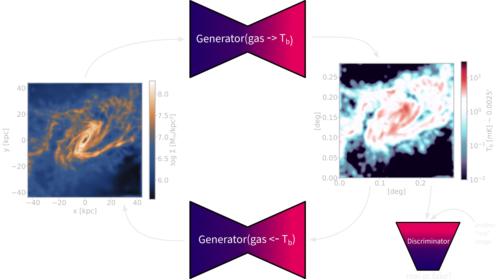

Image-to-image translation between
SPH simulations and SKA mocks
SKA research
at the Centre for Artificial Intelligence (CAI)
Zurich University of Applied Sciences (ZHAW)
02/06/2023
by
Philipp Denzel, Frank-Peter Schilling, Elena Gavagnin 
SKA research
at the Centre for Artificial Intelligence (CAI)
Zurich University of Applied Sciences (ZHAW)
02/06/2023
by
Philipp Denzel, Frank-Peter Schilling, Elena Gavagnin
Slides on my website
Link/QR code to the slides for later or to follow along
Current status
- ZHAW still only has 1 SKACH project: deep learning for SKA 🔗
- hydrodynamical simulations ⇿ SKA mock observations
- more projects to come…
Goal
- compress the knowledge from hydrodynamical and mock simulations to
- map properties from simulations to mock observations
- infer (hidden) astrophysical properties from observables
- explore the usability of various deep learning techniques
for scientific (high-precision) data
Hydrodynamical simulations
- cosmological & astrophysical processes from first principle
- latest simulations reach (almost) petabyte sizes ⇾ ideal for deep learning
- IllustrisTNG, Simba, FIRE, EAGLE, Phoebos, and others
- dark matter
- gas (HI, HII, H2, He, etc.)
- velocities
- stars
- temperature
- metallicity
- turbulence
- magnetic field strength
- X-ray luminosity
- Credit: IllustrisTNG Collaboration

Last time: CycleGAN
- two generator - discriminator pairs
- learn the mapping from domain A ⇿ B and vice versa

CycleGAN experiments
- dataset: roughly 10'000 galaxies from Illustris TNG50-1
- brightness temperature of the gas \(T_b(\mathbf{x}) = 189 h \frac{H_0}{a^2H(a)} \frac{\rho_{\text{HI}}(\mathbf{x})}{\rho_c}\,\text{mK}\)

Problem with training GANs
- GANs: \(\quad \mathbb{E}_{x\sim p_\text{data}}[\log{D_\theta(x)}] + \mathbb{E}_{z\sim q(z)}[1-\log{D_\theta(G_\theta(z))}]\)
- fast inference and high quality results
- implicit density and difficult to diagnose
- mode collapse ⇾ not so much an issue for conditional GANs (such as Pix2Pix)
- vanishing gradients ⇾ regularization (trades quality for stability)
Failure mode
Figure 1: Example discriminator loss ending in failure mode
Pile of data ⇾ AI system

Figure 2: https://xkcd.com/1838/
More parameters, better models?
- hype over generative models: GPT-4, Vicuna, Stable Diffusion, etc.
- larger, more complex ⇾ better
- sidenote: No Moat (interesting article on this topic)
- better: adjust the complexity of your model
to the size of your dataset and task at hand
Pix2Pix
- pix2pix by I. Phillipi (originally in lua torch)
- blog post by Ch. Hesse (difference: Pix2Pix & CycleGAN)
Figure 3: Credit: Ch. Hesse

Figure 4: Credit: Ch. Hesse
Domains
Figure 5: current status of our pix2pix network
Pix2Pix vs. CycleGAN
- tested on a set of 500 TNG50-1 galaxies
- evaluation metric: \(\chi_{\nu}^{2} = \frac{(D_{i,\text{model}} - D_{i,\text{data}})^{2}}{N\sigma_{i}^{2}}\)
(L2 loss normalized with Poisson noise)
- evaluation metric: \(\chi_{\nu}^{2} = \frac{(D_{i,\text{model}} - D_{i,\text{data}})^{2}}{N\sigma_{i}^{2}}\)
| domain A | domain B | CycleGAN | Pix2Pix |
|---|---|---|---|
| gas | HI | 24.47 | 12.82 |
| HI | gas | 26.51 | 13.60 |
| gas | 21cm | 36.29 | (still training) |
| 21cm | gas | 48.10 | (still training) |
Future plans
- better systematics with Karabo
- compare with actual strong gravitational lensing results
- integrate normalizing flow and diffusion networks
- expand from 2D to 3D (point cloud networks)